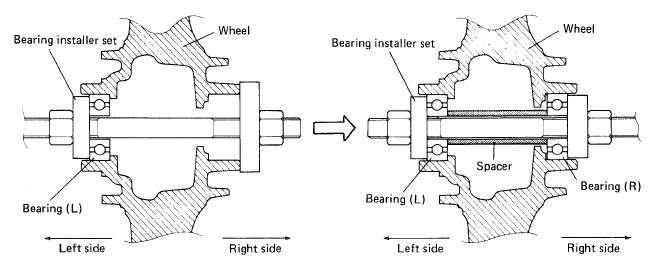
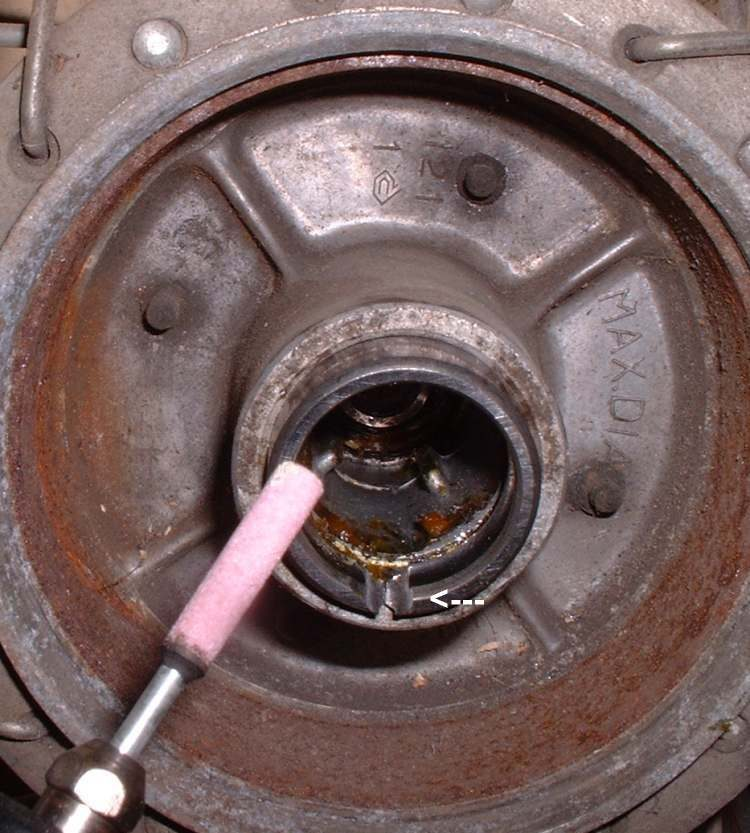
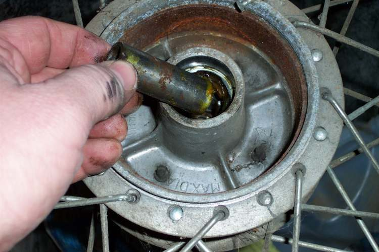

A new wheel bearing must go in straight and be pushed only on its outer ring. Hammering often tilts it or presses on the wrong part. A press made from a threaded rod pulls the bearing in slowly and evenly. It can be made from items sold in most hardware shops.
Safety
- Wear eye protection.
- Press only on the outer ring of the bearing. Pressure on the inner ring or the balls ruins the bearing.
- Support the wheel flat on the bench so it cannot fall.
- Do not use this on a hub you have heated with a flame.
You need
- A threaded rod longer than the hub plus the bearing, and four nuts.
- Two large flat washers or plates, one bigger than the bearing bore. These spread the load.
- A socket or a short piece of pipe whose edge is the same size as the bearing's outer ring.
- Bearing grease for the outer ring and seal lips.
Steps
- Clean the hub bore. Check it for scoring or damage. A damaged bore needs a new hub or a machine shop.
- Lay the new bearing on the bore, square. Make sure the spacer between the bearings is in place before the second bearing goes in.
- Pass the rod through the hub, through the bearing, and place the socket or pipe on the bearing outer ring. Put a large washer and a nut on each end of the rod.
- Hold one nut with a spanner and turn the other. The bearing is drawn in slowly. Stop if it goes in at an angle and start again.
- Stop when the bearing sits flat against its seat. It should stop moving.
- Fit the second bearing from the opposite side the same way.
- Fit new seals with a little grease on the lips.
Check your work
- The bearings turn smoothly by hand with no roughness.
- The wheel spins freely and the axle slides through the spacers.
- There is no play when you hold the axle and rock the hub.
If it did not fix the problem
- Bearing is rough or loose: Check wheel bearings.
- Bearing outer ring will not come out of the hub: Replace wheel bearings.